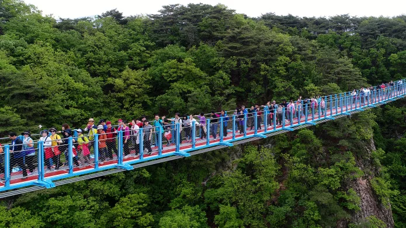
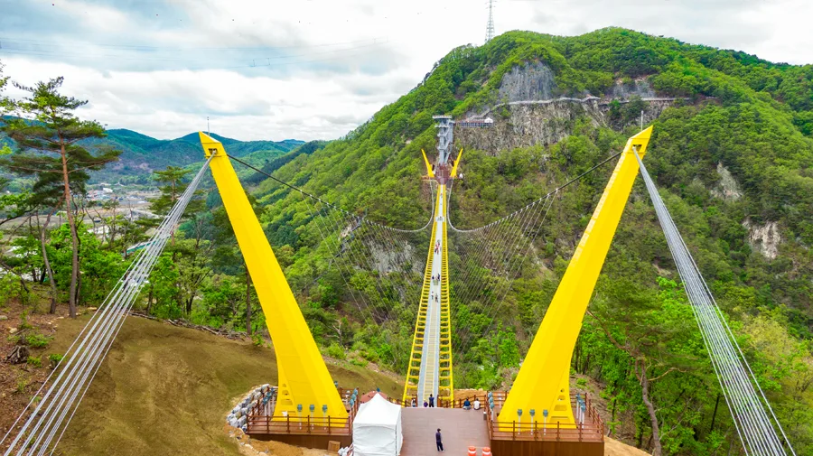
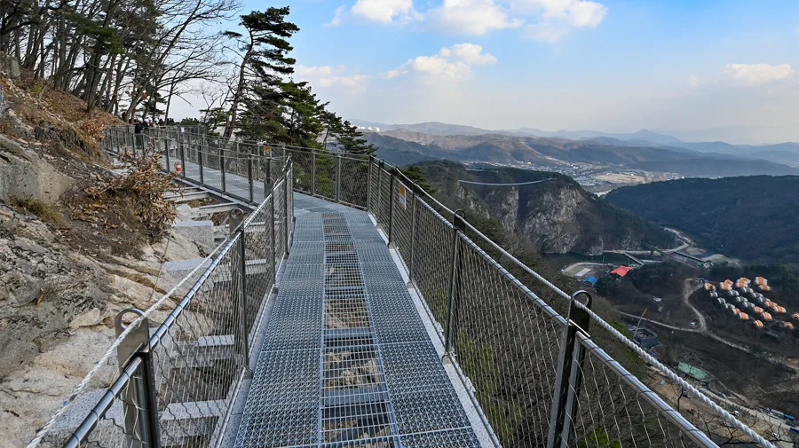
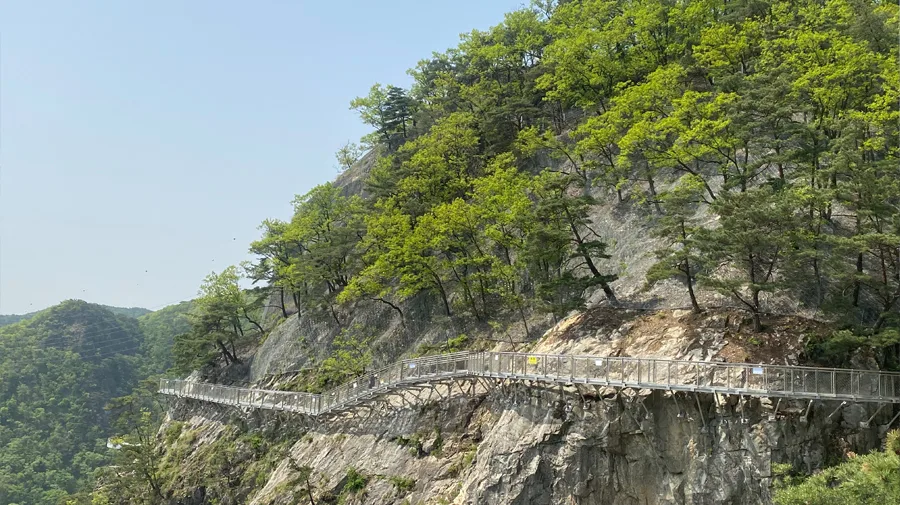
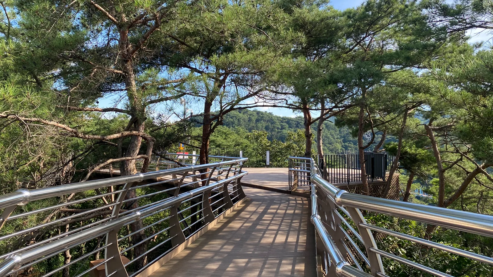
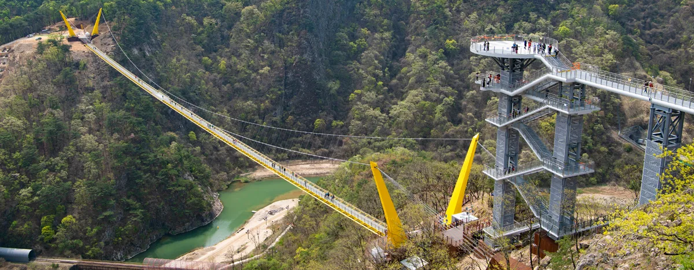

▲ 깎아지른 기암절벽 사이를 잇는 소금산 출렁다리. 길이 200m, 높이 100m로 국내 산악보행교 중 손꼽히는 규모다
강원 원주시 지정면 간현관광지에 있는 소금산 출렁다리는 2018년 1월 11일 개장과 동시에 화제를 모은 곳이다. 처음엔 큰 주목을 받지 못했지만 같은 달 방영된 예능 프로그램에 소개되면서 인지도가 급상승했고, 마침 열린 2018 평창동계올림픽으로 강원도를 찾는 관광객이 늘면서 개장 초기 무료 입장과 맞물려 한국관광 100선에 이름을 올렸다. 그로부터 몇 년 사이 이곳은 다리 하나로 끝나지 않는 복합 관광지 '소금산 그랜드밸리'로 몸집을 키웠다. 유리바닥이 깔린 404m 울렁다리, 절벽을 감아 도는 소금잔도, 케이블카까지 더해지며 원주를 대표하는 관광시설로 자리 잡았다. 이 기사는 출렁다리 규모부터 등산로, 연계 시설, 2026년 기준 입장료·주차·가는 법까지 방문 순서대로 정리했다.
1. 소금산 출렁다리 — 길이 200m, 높이 100m의 산악보행교

▲ 개장 이후 400만 명 넘게 다녀간 소금산 출렁다리. 주말과 단풍철에는 다리 위가 인파로 가득 찬다 ⓒ 원주시청 문화관광
소금산 출렁다리는 길이 200m, 높이 100m, 폭 1.5m로 소금산의 두 봉우리를 잇는다. 개장 당시 산악 보행교로는 국내 최장·최고 규모로 소개됐고, 지금도 손꼽히는 규모를 유지하고 있다. 다리 바닥은 촘촘한 철망 구조라 한 걸음 내디딜 때마다 미세하게 출렁이는 느낌이 나는데, 이 흔들림과 발아래로 훤히 드러나는 협곡·기암절벽의 조합이 소금산 출렁다리를 원주 대표 명소로 만든 핵심이다. 다리 양 끝 지지탑은 뾰족한 첨탑 형태로 세워져 있어, 다리를 건너지 않고 아래쪽 전망 포인트에서 바라만 봐도 사진 명소가 된다.
2. 두 배 긴 유리바닥 울렁다리와 소금잔도·스카이타워

▲ 출렁다리보다 두 배 긴 404m 규모의 소금산 울렁다리. 노란색 주탑이 다리를 지탱한다 ⓒ 원주시청 문화관광
출렁다리만 보고 돌아가면 그랜드밸리의 절반도 못 본 셈이다. 인근에는 기존 출렁다리의 두 배 길이인 404m 규모의 '울렁다리'가 놓여 있다. 노란색 주탑 두 개가 다리를 붙잡고 있는 현수교 형태로, 상판 일부 구간에 강화유리·그물 바닥을 넣어 걸을 때마다 발아래 계곡이 그대로 비쳐 보인다. 건널 때마다 마음이 '울렁거린다'고 해서 붙은 이름답게, 출렁다리보다 더 아찔한 스릴을 원하는 방문객이 즐겨 찾는다.

▲ 소금잔도 구간의 그물 바닥. 발아래로 간현관광지 계곡과 마을이 그대로 내려다보인다 ⓒ 원주시청 문화관광
소금산 정상부 아래 고도 약 200m 절벽을 따라서는 360m 길이의 '소금잔도'가 조성돼 있다. 암벽에 붙여 만든 좁은 통로를 따라 걷다 보면 삼산천이 소금산을 휘감아 도는 절경이 펼쳐지고, 잔도 끝에는 3개 층 구조의 스카이타워 전망대가 서 있다. 타워 위에 오르면 삼산천은 물론 백운산·치악산 자락까지 한눈에 들어와, 그랜드밸리의 랜드마크로 꼽힌다.

▲ 절벽에 바짝 붙여 만든 소금잔도. 고도 200m 절벽을 360m에 걸쳐 감아 돈다 ⓒ 원주시청 문화관광
3. 소금산 정상 등산로 — 578개 계단, 초보자도 걷는 완만한 코스

▲ 소나무 숲 사이로 이어지는 700m 길이의 데크산책로 ⓒ 원주시청 문화관광
출렁다리를 건너 소금산 정상 방면으로 이어지는 등산로는 578개의 계단으로 구성돼 있다. 얼핏 부담스러워 보이지만 계단 대여섯 칸을 오르면 곧바로 평지가 이어지는 식으로 짧은 오르막과 쉼터가 반복돼, 체력 소모가 크지 않은 편이다. 출렁다리~데크산책로~소금잔도~스카이타워~울렁다리를 잇는 한 바퀴 코스를 완주하는 데는 대략 2시간 안팎이 걸리며, 난이도도 초보자용에 가까워 어린아이를 동반한 가족 단위 방문객도 무리 없이 걷는다. 정상부 데크산책로는 총 700m로, 소금산의 소나무 숲과 암릉을 편안하게 조망할 수 있는 완만한 구간이다.
4. 간현관광지 연계 시설 — 케이블카·나오라쇼·캠핑장

▲ 울렁다리(왼쪽)와 스카이타워를 잇는 조감 전경. 그랜드밸리 시설들이 협곡을 사이에 두고 연결돼 있다 ⓒ 원주시청 문화관광
2025년 2월 26일에는 소금산 케이블카가 새로 문을 열었다. 하부 간현유원지 주차장에서 상부 소금산 출렁다리 앞까지 972m 구간을 오가며, 10인승 캐빈 22대가 운행된다. 계단으로 오르면 시간이 걸리던 구간을 단 몇 분 만에 이동할 수 있어, 체력에 자신이 없는 방문객이나 야간에 방문하는 관광객에게 특히 유용하다.
간현관광지에는 이 밖에도 음악분수·미디어파사드·야간경관조명이 어우러지는 야간 공연 '나오라쇼'가 열리고, 섬강과 간현유원지를 낀 캠핑장도 운영된다. 낮에는 출렁다리·울렁다리·소금잔도를 트레킹하듯 둘러보고, 해 진 뒤에는 나오라쇼와 조명이 켜진 다리를 즐기는 '낮과 밤이 다른' 코스로 꾸릴 수 있는 것도 이곳의 강점이다.
5. 입장료·운영시간·주차·가는 법
소금산 그랜드밸리는 출렁다리·데크산책로·소금잔도·스카이타워·울렁다리를 묶은 통합권으로 운영된다. 2026년 기준 대인(만 13세 이상) 9,000원, 소인(만 7~12세) 5,000원이며, 경로 등 우대 대상에게는 할인 요금이 적용된다. 운영시간은 하절기(5~10월) 09:00~18:00, 동절기(11~4월) 09:00~17:00이고, 매표는 마감 1시간~1시간 30분 전까지만 가능하다. 휴장일은 매주 월요일이며, 월요일이 공휴일이면 그다음 첫 평일에 쉰다. 주차 공간은 일반차량·장애인·버스·노약자·전기차 구역을 합쳐 약 1,300면 규모로 조성돼 있다.
| 항목 | 내용 |
|---|---|
| 통합권 입장료 | 대인(13세 이상) 9,000원, 소인(7~12세) 5,000원 |
| 운영시간(하절기 5~10월) | 09:00~18:00, 매표 마감 1시간~1시간 30분 전 |
| 운영시간(동절기 11~4월) | 09:00~17:00, 매표 마감 1시간~1시간 30분 전 |
| 휴장일 | 매주 월요일(공휴일이면 다음 첫 평일) |
| 주차 | 약 1,300면(일반·장애인·버스·노약자·전기차 구역) |
| 케이블카 | 하부 주차장~출렁다리 972m, 10인승 캐빈 22대(2025년 2월 개통) |
| 위치 | 강원 원주시 지정면 소금산길 12 |
대중교통을 이용한다면 원주 시내에서 52·57·58번 버스를 타고 간현관광지 인근에서 내려 도보로 접근할 수 있다. 자가용은 영동고속도로 문막IC, 중앙고속도로 남원주IC, 제2영동고속도로 서원주IC를 기준으로 간현관광지 방면으로 진입하면 된다.
원주문화관광재단에서 간현관광지 최신 정보 확인 가능✅ 원주 소금산 출렁다리, 가기 전 체크리스트
· 2018년 1월 11일 개장, 길이 200m·높이 100m·폭 1.5m의 산악보행교
· 인근 '울렁다리'는 두 배 긴 404m, 상판 일부 유리·그물 바닥 적용
· 소금잔도는 고도 200m 절벽을 따라 360m, 끝에는 3층 스카이타워 전망대
· 정상 등산로는 계단 578개, 완주 약 2시간, 초보자도 가능한 완만한 난이도
· 2025년 2월 케이블카 개통(하부 주차장~출렁다리 972m, 10인승 22대)
· 통합권 입장료 대인 9,000원·소인 5,000원, 매주 월요일 휴장
· 주차 약 1,300면, 위치는 강원 원주시 지정면 소금산길 12
· 야간에는 음악분수·미디어파사드 '나오라쇼' 공연도 함께 즐길 수 있음